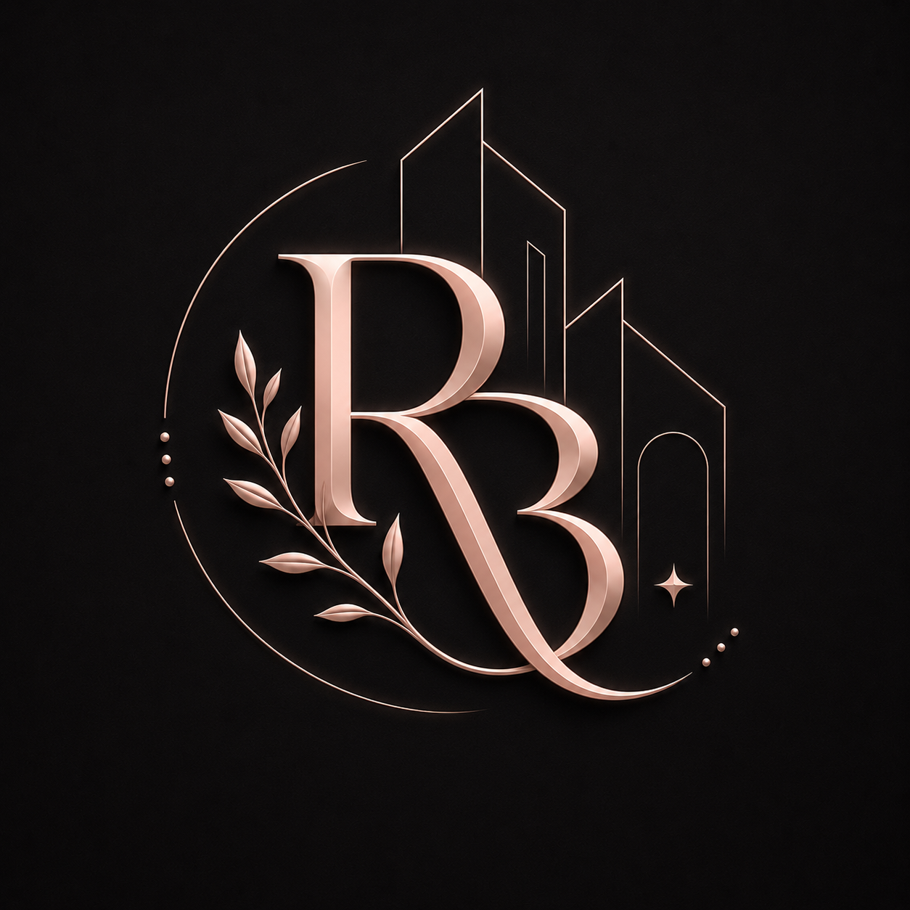
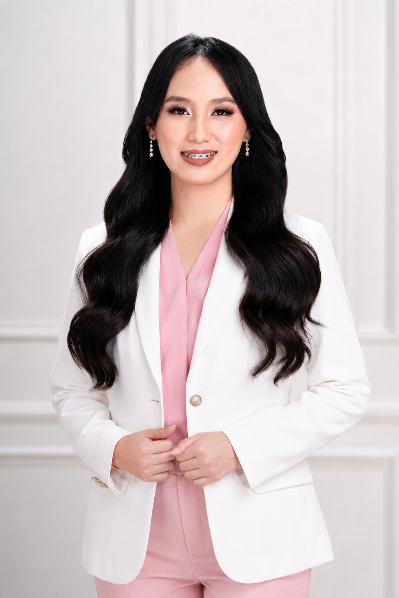

Executive & CEO Support
Task coordination, scheduling support, follow-ups, research, file organization, and daily admin assistance.

Executive Assistant • Admin & Marketing • Architecture Support
I’m Russelrose Baduco, an architecture-trained Executive Assistant and support specialist helping CEOs, business owners, and construction-related teams stay organized through admin support, marketing assistance, drafting, documentation, and design coordination.

Experience & Collaborations
Profile
I support business owners and teams through organized administrative assistance, CEO support, marketing coordination, documentation, online research, file management, and day-to-day operational tasks.
With my architecture background, I can also assist with AutoCAD drafting, 3D modeling, visualization, design revisions, and construction-related documentation.
Services
Task coordination, scheduling support, follow-ups, research, file organization, and daily admin assistance.
Document preparation, data organization, Basecamp updates, Microsoft/Google file systems, and workflow tracking.
Social media assistance, Canva graphics, marketing materials, brand-aligned visuals, and online platform support.
AutoCAD drafting, SketchUp modeling, Revit support, D5 visualization, design revisions, and technical drawing assistance.
Experience
Alba Craft & Presidential Group Building Services
Supports Australian-based leadership and business operations with executive assistance, admin coordination, marketing tasks, documentation, design support, and architectural drafting assistance.
One Midori Asia Inc.
Assisted with site supervision, construction monitoring, measurements, material checking, contractor coordination, and project documentation.
Fire Block Plans / Australian Project Support
Assisted in CAD drafting support for Australian-based documentation, including fire block plan assistance, redline updates, drawing preparation, and technical revisions.
Botanic Bloom Design & Landscaping Services
Created landscape 3D models, visual concepts, outdoor layout support, and presentation-ready design assets.
Tools
Support Style
Reliable daily support for admin, follow-ups, coordination, documents, and business organization.
Drafting, 3D modeling, visualization support, documentation, research, and project coordination.
A flexible assistant who can support both operations and visuals — from admin work to marketing graphics.
Contact
Open to remote Executive Assistant, Admin Support, Marketing Support, and Architecture Support opportunities.